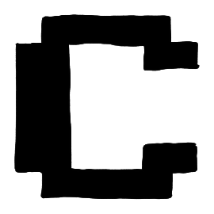

I am Oscar Casley, a passionate, dedicated, DIY creative and have been making music for over 20 years. Starting with recording my own music as a teenager in NZ, I moved back to Naarm, my birthplace, to pursue my dreams. I formed a network of amazing like-minded creatives, played in many bands, and recorded and produced over 15 works for myself and others. I focused mainly on the creative side, writing, recording and playing many gigs.
Before COVID I bought my first synthesizer and began exploring a different side of music. The rabbit hole deepened, and soon I was building my own synths and sequencers, experimenting with new ways of making and thinking about sound. I have always loved teaching myself new skills and figuring things out through experimentation, whether that is music, electronics, visual art or game development.
After releasing my last full-length solo album, I took a break from gigging and started developing an indie video game called Freefall '95 with two friends, creating all of the visual art, sound effects and music. Working on Freefall '95 changed the way I thought about sound and music. Rather than creating something that is experienced the same way every time, I became fascinated by making audio that responds to a player's actions and helps create a believable world.
The project strengthened my interest in interactive audio and helped me meet people and engage with the thriving indie game community. My plan is to move into making game audio for more indie projects, including my own. I am excited to keep developing my skills, experimenting with sound and finding my own approach to interactive audio, while continuing to form relationships with other amazing creatives and finding new opportunities to collaborate.